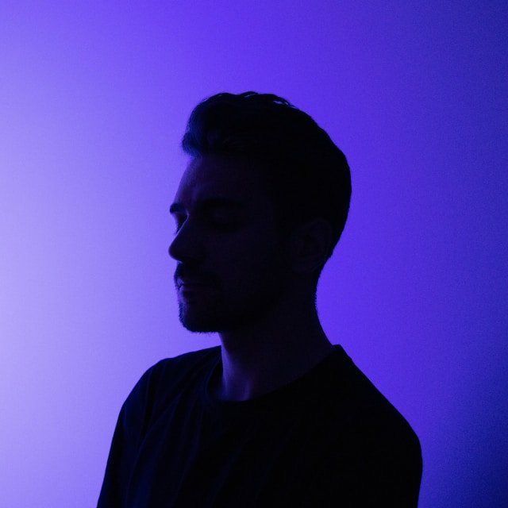
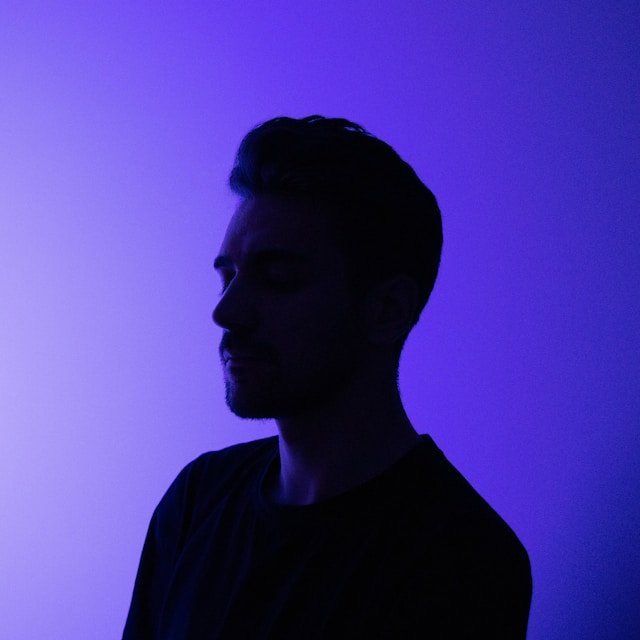

Shiba Butik Oteli olarak, misafirlerimizin konforu ve memnuniyeti bizim için en öncelikli önceliklerden biridir. Sizlerin değerli geri bildirimleri, hizmetlerimizi sürekli olarak geliştirmemize yardımcı olmaktadır. İşte, otelimizde konaklamış misafirlerimizin bizlere bıraktığı bazı yorumlar.
1. Elif Y.
Shiba’da geçirdiğimiz hafta sonu tatili mükemmel bir deneyim oldu. Oda çok konforluydu, kahvaltı harikaydı ve personel gerçekten samimi ve yardımcıydı. Çeşme'nin merkezine yakın konumu sayesinde şehir gezilerimiz de çok kolay oldu. Kesinlikle tekrar geleceğiz!
2. Ahmet K.
"Shiba Butik Oteli'nde geçirdiğimiz zaman, Çeşme'deki en iyi konaklama deneyimlerinden biriydi. Otelin odaları, şıklığı ve konforuyla beklentilerimizi fazlasıyla karşıladı. Odamızda geçirdiğimiz zaman boyunca her şeyin mükemmel olduğunu söyleyebilirim. Özellikle spa hizmetleri çok rahatlatıcıydı; stresimizi tamamen unuttuk. Fitness merkezindeki modern ekipmanlar da tatilimiz sırasında fiziksel olarak aktif kalmamızı sağladı. Otelin sunmuş olduğu olanaklar ve personelin güler yüzlü hizmeti, tatilimizi daha da keyifli hale getirdi. Shiba'yı herkese tavsiye ederim!"
3. Zeynep A.
"Shiba Butik Oteli'nde kaldığımız süre boyunca kendimizi adeta evimizde gibi hissettik. Otelin konumu, hem Çeşme'nin merkezine hem de plajlara oldukça yakın, bu da gezilerimizi son derece kolaylaştırdı. Otelin iç tasarımı oldukça zarif ve rahatlatıcıydı. Odamızda geçirdiğimiz zaman boyunca konforu maksimum seviyede hissettik. Personel, her ihtiyacımızla ilgilendi ve bizlere yerel bölge hakkında birçok faydalı bilgi sağladı. Shiba'nın sıcak atmosferi ve profesyonel hizmetleri sayesinde, Çeşme'deki tatilimiz gerçekten unutulmaz bir deneyim oldu."
4. Mehmet T.
"Shiba Butik Oteli, gerçekten mükemmel bir konaklama deneyimi sundu. Odamızın manzarası muhteşemdi ve her sabah uyandığımızda göz kamaştırıcı bir deniz manzarasıyla karşılaştık. Otelin tasarımı modern ve şık, her detay özenle düşünülmüş. Otelin yemekleri, özellikle akşam yemekleri oldukça lezzetliydi ve çeşitli seçenekler sunuyordu. Otelde geçirdiğimiz zaman boyunca hem rahatladık hem de eğlendik. Shiba'nın sıcak atmosferi ve profesyonel ekibi, tatilimizi daha da keyifli hale getirdi. Kesinlikle tekrar tercih edeceğimiz bir yer."
5. Seda G.
"Shiba Butik Oteli'nde konaklamamız gerçekten olağanüstüydü. Otelin sunduğu lüks ve konfor, tatilimizi çok özel kıldı. Personelin ilgisi ve misafirperverliği son derece etkileyiciydi. Ücretsiz Wi-Fi hizmeti sayesinde işimizi kolaylıkla halledebildik ve fitness merkezindeki olanaklardan da memnun kaldık. Otelin tasarımı, modern ve rahat bir atmosfer yaratıyor, kendinizi gerçekten evinizde gibi hissediyorsunuz. Çeşme'deki tatilimiz boyunca Shiba'nın sunduğu olanaklar ve hizmetler, beklentilerimizi fazlasıyla karşıladı. Şiddetle tavsiye ederim."
Shiba Butik Oteli olarak, konuklarımızın değerli yorumları bizler için büyük bir anlam taşıyor. Sizlerin geri bildirimleri, hizmetlerimizi sürekli olarak geliştirmemize ve daha iyi hale getirmemize yardımcı oluyor. Otelimizde geçirdiğiniz deneyimlerinizi paylaşmak isterseniz, lütfen bizimle iletişime geçin veya yorumunuzu buraya bırakın. Sizleri yeniden ağırlamaktan mutluluk duyacağız.

 
